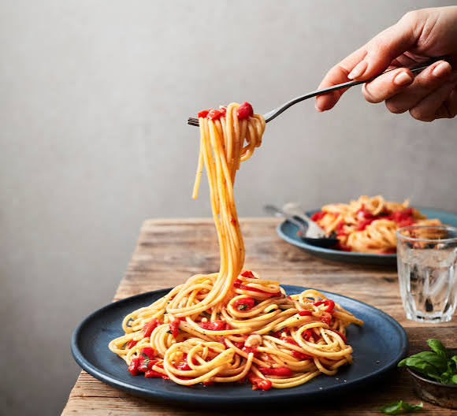

Name: Judy Ann Butao
Birthdate: June 14,2006
Address:P-2 Lower Olave BTA
Job:Student
My childhood was a happy and memorable part of my life. I enjoyed playing with my friends, spending time with my family, and exploring new things.
My teenage life was a time of learning, growth, and discovering myself. I experienced many changes, made new friends, and learned from both happy and difficult moments.
My adulthood is a time of responsibility, growth, and new experiences. I am learning to make important decisions, face challenges, and work toward my dreams.
My favorite artist is Taylor Swift. I admire her because she is talented, hardworking, and creative.

My favorite food is spaghetti. I love it because it is delicious, flavorful, and easy to enjoy.
My favorite place is Enchanted River. I love this place because of its beautiful, clear blue water and peaceful surroundings.